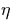
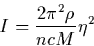

The induced dipole moment is a useful quantity since it allows determination of , the effective charge associated with a given vibrational mode of a defect. This is directly proportional to the absorption intensity of the mode, something that can be directly determined by experiment. If I is the integrated intensity of absorption then

where c is the velocity of light, n the refractive index of the material, the concentration of the impurity, and M its mass [41]. Previous calculations using our method have shown accurate determination of dipole moments for small molecules.
After determining a dynamical matrix from the energy double derivatives as described in the previous section, this is diagonalised to give a set of eigenvectors associated with each vibrational mode. These are scaled by the square root of the atomic masses as described above.
The atoms in the cluster are then shifted along their normal mode directions and the energy and adiabatic cluster dipole determined. This is repeated in a reverse direction, and the difference between these two gives the induced dipole moment of the cluster for that vibrational mode. is simply the square of this value.